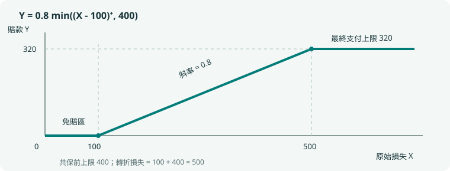

觀念推導與 24 個典型例題
第二版增補，2026-10-15。本冊把「為什麼選這個模型」和「公式怎麼來」補在速查筆記之後。例題 E01–E24 全部為本次原創教學例，不計入 180 道五選一題庫。現行範圍仍以 SOA 2026 年 11 月考綱 為準；ASM 章節、正文與掃描頁次對照見 00 文件。
建議先遮住解答，寫出隨機變量、支持集、支付函數或條件事件，再開始計算。題目背景可以改變，這四件事通常決定解法。
一、從題面建立機率模型
E01｜三事件：用互斥小區域避免重複計數
對應：ASM 1；考綱 1a、1e；後續練習 P002、P027、A001。
三事件的機率分別為 ，三個兩兩交集依序為 ，三重交集為 。求恰好兩個發生的機率。
辨識。 每個兩兩交集都包含三重區域。若把三個交集直接相加，三重區域會被算三次；而它在「恰好兩個」中應計零次。
計算。 三個只有兩者的區域分別為 、、，合計 。
重建公式。 設兩兩交集和為 ，三重交集為 ，則 ；。差別正是三重區域是否保留一次。
自查。 七個非空互斥區域為 ，均非負；聯集 。這也檢查題目提供的比例是否可行。
E02｜無放回：條件化後重新盤點母體
對應：ASM 2、3、17；考綱 1b、1f；練習 A003。
12 份文件中有 5 份錯誤。無放回抽 4 份，已知至少一份錯誤，求恰好兩份錯誤的機率。
辨識。 原來的計數是超幾何；現在再限制在「至少一份錯誤」的樣本子集上。不是把錯誤率重新當成獨立成功率。
另一個想法。 先算兩個無條件機率，再相除，分母中的 會約去。由計數式可直接看出每個等可能子集的角色。
容易錯。 寫成 使用了放回模型；即使數值接近也不是同一個實驗。
E03｜相同風險客戶：條件獨立不等於邊際獨立
對應：ASM 4、16；考綱 1g；練習 P017、A004、A010。
高風險占 30%，每年無賠機率 0.60；低風險占 70%，每年無賠機率 0.90。給定類別後各年獨立。同一客戶兩年無賠後，求其為高風險的機率。
分組似然。 高風險產生觀測的機率是 ，低風險是 。先驗與似然相乘，再正規化：
單年邊際無賠機率是 ；但同一人兩年無賠為 ，不是 。連續觀測也在提供客戶類別的資訊。
預測。 第三年索賠機率為 。先更新組別，再按更新後組別權重預測。
E04｜「至少一個」與「指定第一個」是不同的資訊
對應：ASM 3；考綱 1f；練習 P020、P117、A014。
甲乙獨立索賠率均為 。若知道至少一個索賠，求兩者都索賠的機率。
四個結果為：都不索賠 、只有甲 、只有乙 、兩者都索賠 。去掉第一格後重新正規化，得到 。
若知道甲已索賠，樣本空間則只有「只有甲」與「兩者都索賠」，答案為 。同一個字「已知」，背後的資訊可能不同。
二、分布、期望與參數的理解
E05｜CDF 跳躍：連續損失也可以產生混合賠款
對應：ASM 5；考綱 2a、2e；練習 P035、P088、A032。
，賠款 。求完整賠款分布。
先寫支付。 時 ； 時 ； 時 。
有質量 、，中間區間密度為 。檢查：。
為什麼不能只微分？ 微分只留下中間的 0.5 機率，會漏掉兩端合共 0.5 的質量。涉及 CDF 的單點請用跳躍大小。
E06｜求期望不必先求變換後的密度
對應：ASM 7、8；考綱 2c、2d；練習 A019、A042。
取 ，機率為 ，令 。求 與 。
三種結果的 值為 。直接用原始機率加權：，，故方差為 。
對照錯法。 ，但 ，與 不同。函數一般不能穿過期望符號。
E07｜二項、超幾何、負二項：先看什麼固定
對應：ASM 17、18；考綱 2a；練習 A003、A021–A022。
成功率 的獨立試驗中，求第 2 次成功恰在第 5 次出現的機率。
固定的是成功次數。 最後一次必須成功；前四次恰有一次成功。因此答案是 。
若改問「五次中恰好兩次成功」，則最後一次不必成功，答案改成 。若從有限母體無放回抽五件，則應改用超幾何。
選模表。 固定試驗數、獨立同機率 → 二項；固定成功數、等到完成才停 → 負二項；有限母體無放回 → 超幾何。
E08｜Poisson 相鄰機率比為什麼有用
對應：ASM 19；考綱 2a、2c；練習 P054、A023。
已知 ，且 ，求 與 。
因此 。比值法約掉階乘、指數與共同冪次，可用來反推參數，也可用來判斷眾數：機率在比值大於 1 時仍上升，小於 1 時開始下降。
邊界。 整數參數 8 時，7 與 8 是兩個眾數；不是只有 8。
E09｜指數無記憶：剩餘壽命與總壽命分開
對應：ASM 20；考綱 2b、2c；練習 P059、A027–A028。
為均值 6 的指數壽命。已知 ，求 與 。
令剩餘壽命 ，則 。總壽命條件均值為 ；事件區間改成 ，故機率 。
自查。 若把均值答為 6，等於把已經經過的四年丟掉。無記憶的是「還要等多久」，並非總長度。
E10｜Gamma 的參數從均值、方差重建
對應：知識點 §8.3；考綱 2a、2c、2d；練習 A025。
Gamma 損失均值為 18、方差為 54，求形狀、尺度及 。
由 得 、。二階矩為 。
若題目用率參數，則率為 ，不是 3。把同一個數字直接代入另一套參數公式會造成系統性錯誤。
連結。 在 Poisson 到達模型中，等待第 6 次到達的時間也可用相同形狀建模，但要確認到達率與時間單位。
E11｜Beta 的指數比參數少一
對應：知識點 §8.4；考綱 2a、2c、2d；練習 A026。
，。求 、均值、方差。
對照 ，得 ，不是 2 與 1。正規化積分為 ，故 。
均值 ；方差 。也可逐次積分求 、，再相減，作為交叉檢查。
E12｜常態百分位：從兩條方程反推參數
對應：ASM 21；考綱 2c；練習 A029。
常態分布第 10、90 百分位為 70、110，使用 ，求均值與標準差。
對稱性給均值 。再由 得 。
一般兩百分位不一定對稱，應解 。如果需要方差，最後再平方。
三、保險支付：從函數到分布與矩
E13｜從支付圖讀懂免賠、共保、上限
對應：ASM 5.1、7、8；考綱 2e、2f；練習 A030–A034。
原損失 ，免賠額 100，共保前賠款上限 400，保險人比例 0.8。

斜率 0.8 表示每增加 1 單位超額損失，保險人多賠 0.8；平台高度 320 是最終賠款上限。若文字改成「最終賠款上限 400」，平台就應是 400，轉折損失為 。
檢查點。 當 ，賠款應為 。先檢查這三個位置，再做積分，可以提早發現條款順序錯誤。
E14｜尾積分公式：把金額看成一層層指示變量
對應：ASM 7；考綱 2c、2f；練習 A030。
對非負金額 ，把它寫成 ，再取期望：
這是對生存函數下方的面積求和。普通免賠 對應 ，換元得到 。
例：均值 500 的指數損失，免賠 200，期望賠款為 。若共保前上限 600，右端截在 ，變成 。
二階矩同理。 ，所以 。這個推導比死記賠款二階矩更容易檢查。
E15｜每次支付的方差不能直接除啟賠率
對應：ASM 8、20；考綱 2f；練習 P084、A031。
均值 500 的指數損失，免賠額 200，無上限，令 。每次損失賠款均值 ，二階矩 。
給定正賠款後，先分別正規化：
因此條件方差為 。若用無條件方差除以 ，會得到 ，多出一個錯誤項。
原因。 方差含有均值的平方；條件化會改變均值，不能只對整個方差做一次除法。
E16｜通膨：先改損失，還是連條款一起改
對應：ASM 5.1、8；考綱 2e、2f；練習 A033。
，免賠 200。損失通膨 10%，條款保持不變，求期望賠款。
新損失 ，支付為 ，故期望為 。
若免賠額也同比增至 220，支付才是 ，期望為 。這兩個答案對應不同保單條款。
讀題提示。 fixed deductible、indexed deductible、benefit limit applies after coinsurance 都應先翻成數學函數，不能只看關鍵字套公式。
四、多變量：表格、相依與條件化
E17｜聯合表格一次算出邊際、條件與協方差
對應：ASM 11–14；考綱 3a–3e；練習 A045–A048。
| 0 | 1 | 2 | |
|---|---|---|---|
| 0 | 0.10 | 0.20 | 0.10 |
| 1 | 0.20 | 0.10 | 0.30 |
列出 的邊際為 ； 的機率為 。所以 ，協方差 。
條件 下， 的機率變成 ，條件均值 ，二階矩 ，方差 。
先後順序。 邊際先加，條件再除，矩最後乘權重。若還沒正規化就算條件矩，通常會少除一次條件機率。
E18｜全方差為什麼多一項
對應：ASM 16；考綱 2d、3c、3d；練習 A037、A048。
兩類客戶各半，條件均值為 1、5，條件方差為 2、6。無條件均值 ，方差為 。
推導可從 開始。展開平方後，交叉項條件期望為 0，留下「組內變異」與「組間均值變異」。
若兩類均值一樣，第二項才消失。不同風險客戶混合後的方差，可能比每一組內的方差都大。
E19｜零相關但仍相依：檢查一個條件事件
對應：ASM 13；考綱 3e；練習 P114、A049。
等可能取 ，。由對稱性 ，所以協方差為 0。
但 ，而 ，條件機率已改變，故不獨立。
重點。 相關係數只量度線性關係；「Y 由 X 決定」可以是非線性的。除非額外有適用的結構條件，不要把零相關升格為獨立。
E20｜Poisson 給定總數：把到達分配成二項
對應：ASM 11、19；考綱 3b、3g；練習 P108、A050。
獨立，已知 ，求 。
先用聯合機率除以總數機率：
一般形式是 。原本兩個次數獨立，給定總和後不再獨立；一邊多一次，另一邊就少一次。
五、次序統計量與大樣本近似
E21｜第 k 小：改寫成落在門檻左邊的人數
對應：ASM 23；考綱 3f；練習 A053–A054。
4 個 IID 觀測，求第 2 小大於 0.3 的機率。
第 2 小仍大於 0.3，代表至多一個觀測不超過 0.3。令 為這個人數，則 ，所以答案為 。
重建方法。 先畫門檻，再把事件翻成「至多 k−1」或「至少 k」，最後才使用二項式。即使母體不是均勻，只要 IID，成功率都可以換成 。
E22｜兩個次序統計量：分三區做聯合計數
對應：ASM 23；考綱 3f；練習 P119、A055。
4 個 IID ，求 。
第一個條件要求沒有人落在 ；第二個要求至少三人落在 。因此只有兩種數量組合：三人中段、一人右段，或四人中段。
容易錯。 把兩個次序統計量事件的機率直接相乘，等於假設它們獨立。它們來自同一批樣本，通常明顯相依。
E23｜常態線性組合是精確結果，CLT 是近似
對應：ASM 21、22；考綱 3g–3i；練習 A052、A059–A060。
若獨立 ，則 。因此 ，這是精確分布運算。
若改成 100 筆 IID、各均值 20、標準差 4，但母體不是常態，則總和只是用 CLT 近似為 。二者用同一套標準化，依據卻不同。
係數自查。 ；減法不會把 Y 的方差變負。
E24｜格點與連續性修正：為什麼不總是 0.5
對應：ASM 22；考綱 3i；練習 P109、A057。
，求 的常態近似。均值 20，標準差 4；格點間距 1，邊界移到 ，得到 。
若改問 ，則 S 的格點間距為 200，事件 對應的連續門檻應為 4900。標準化後仍是 。
錯法。 對所有金額一律加減 0.5，忽略其離散格距。連續損失的總和則不需要這種修正。
六、快速選模決策表與薄弱點回補
| 問題先問什麼 | 若答案是 | 優先工具 |
|---|---|---|
| 是否已知一個事件？ | 是 | 先寫分母；條件化後重新正規化 |
| 抽樣是否放回？ | 無放回有限母體 | 超幾何／逐步條件機率 |
| 試驗數固定，還是成功數固定？ | 前者／後者 | 二項／負二項 |
| 同一類客戶連續觀測？ | 有潛在風險組別 | 每組似然 → Bayes → 預測 |
| 金額是否有免賠與上限？ | 是 | 先寫分段支付函數 |
| 是損失、每次損失賠款或每次正賠款？ | 三者分清 | 正賠款要額外條件化 |
| 要變換後的矩還是分布？ | 只要矩 | 直接算 |
| 是第 k 小或最大最小？ | 是 | 轉成門檻左右的計數事件 |
| 母體已常態且獨立？ | 是 | 精確常態組合 |
| IID 大樣本總和但母體非正態？ | 有有限正方差 | CLT，檢查尺度與近似前提 |
做錯後怎麼補。 題面讀錯就重寫支付函數或事件；選模錯就回看上表；公式錯就自己重推一次；算術錯就用另一種方法交叉核對；時間不足則重做同題並記錄最短合理解法。不要把背答案當作掌握。
建議檢查點。 E01–E04 可閉卷後再做一般機率新題；E05–E16 對應單變量；E17–E24 對應多變量。進階 A 題的英文題面可先單獨閱讀，中文僅在確認理解時查看。